Cleethorpes Pearl · Starlight Suite · Lounge Bar · Carousel
NIPOS Handbook
How the tills, order screens, kitchen screen, customer display and Back Office work, how to set them up for a night, and what to do when something goes wrong.
About the screenshots. They were taken from the offline test copy of the current version, using sample staff (Sam Taylor, Jordan Lee) and sample orders. They are not real takings.
01Overview
NIPOS is a web app. Every screen is a page on the same site, so any tablet, phone or computer with a browser can be a till, an order screen or the kitchen screen.
| Screen | Address | Who uses it |
|---|---|---|
| Till | keystonegd.github.io/NIPOS/ | Table service and bar staff taking orders and payments |
| Order screen | keystonegd.github.io/NIPOS/orders | The bar: accept drinks orders, mark them ready, report problems |
| Kitchen View | keystonegd.github.io/NIPOS/kitchen | The kitchen: food from every venue it cooks for |
| Customer display | keystonegd.github.io/NIPOS/display | A screen facing the customer, paired to one till |
| Back Office | keystonegd.github.io/NIPOS/backend | Managers: takings, menu, staff, notifications, Z Reads |
How an order moves
- A till rings up the order, takes a table number and takes payment. The sale is saved straight away.
- The order appears on the bar's order screen. If it has food, the food part also appears on the Kitchen View.
- The bar and the kitchen each accept and finish their own part. The order is ready to take out once every part is done.
- The till that takes it out taps Delivered. Only one till can deliver it, and the person who placed it gets a "delivered" notice.
Each browser tab is named after its screen, for example NIPOS - Starlight Suite, NIPOS Kitchen View - Functions Kitchen or NIPOS Back Office - Cleethorpes Pearl. You can change these names in Master settings.
02Setting up a device
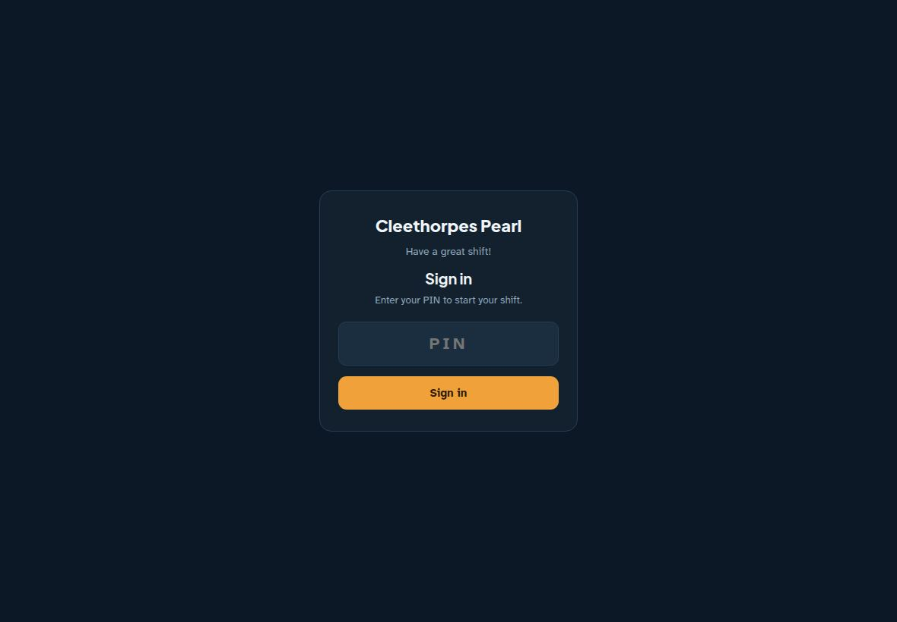
- Open the right address for the screen (see the table above). On an iPhone or iPad, use Share › Add to Home Screen and open NIPOS from the Home Screen from then on. Phone alerts only work that way.
- Sign in with the PIN of the person or team using the device, for example Starlight Bar Team on the bar's order screen.
- Tap Turn on alerts and allow notifications. You only need to do this once per device.
- Check for the amber button. If "Sound is off on this screen" shows at the top, tap it. Browsers only allow sound after the screen has been tapped once.
- Customer display only: open
/display, sign in, pick the venue and enter the till's 4-digit code. The till shows its code in Settings › Customer display.
iPhone and iPad. When the screen is locked or NIPOS is in the background, iOS doesn't let it make sound. In that case only the push notification sounds. Beeps now play with the silent switch on, on iOS 17 and later.
03The till
The till rings up orders and takes payment. It comes in six layouts; Master settings sets the default and can give individual people their own.
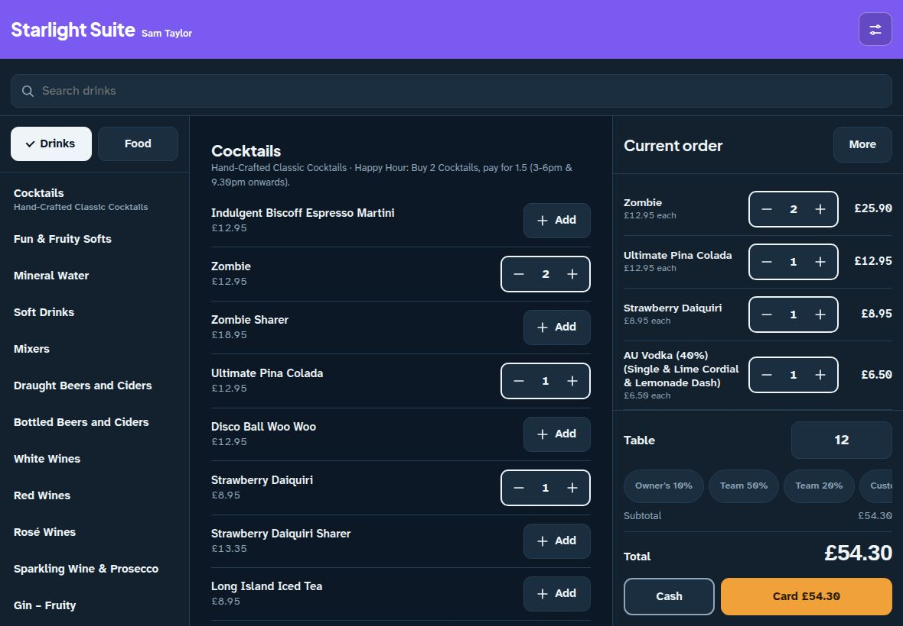
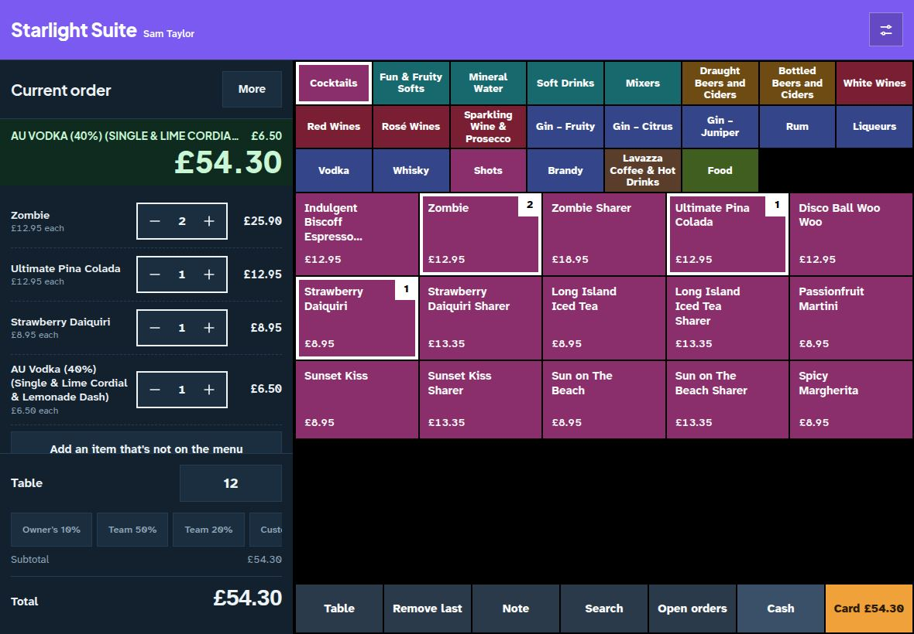
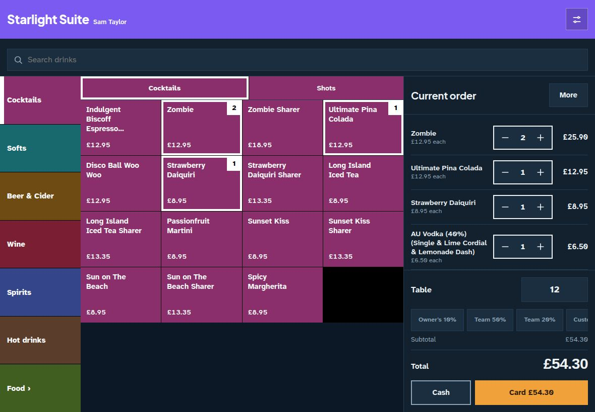
Layouts
| Layout | Best for |
|---|---|
| Classic | Tablets. A list with + and − buttons, and a Drinks/Food switch. |
| Tiles | Quick tapping on any size of screen. |
| Colour | Tiles coloured by section, so you can find things at a glance. |
| List | Long menus on phones. |
| Pub Till | Staff used to a traditional till. Department keys and function keys. |
| Dock | One-handed phone use. Sections along the bottom, plus "Tonight's top 12". |
Food and drinks
Food is its own menu. On the drinks side, the section row ends with Food ›. Tapping it swaps the row for one ‹ Drinks button and the food categories, and ‹ Drinks takes you back to the drinks section you were on. On a phone, a long list of categories sits in a two-row strip you swipe sideways, so the items keep most of the screen.
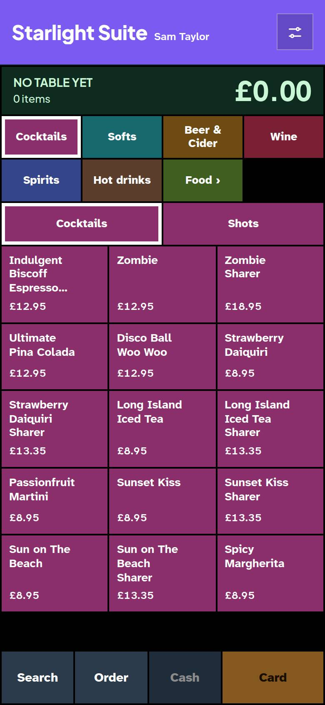
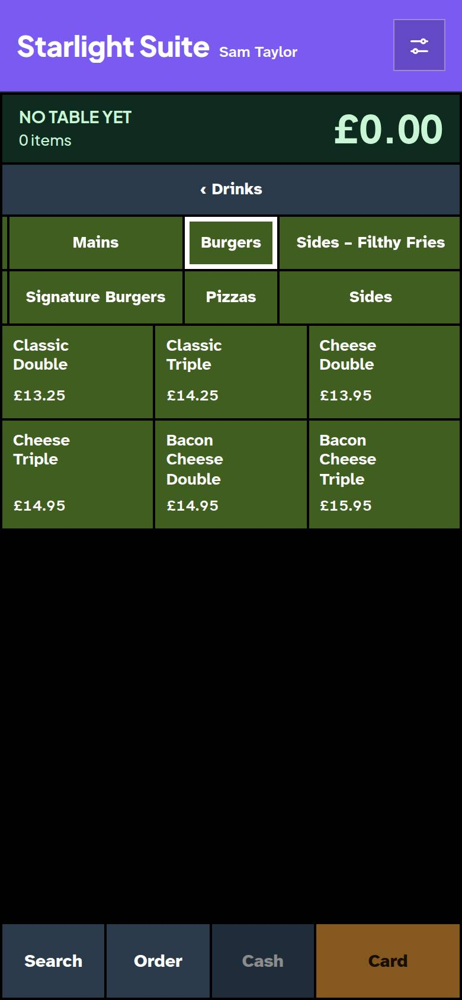
Food only shows at venues where it's switched on (Back Office › Venues). At the moment that's Starlight Suite only.
The till menu
The menu button at the top right opens Settings and reports. What you see there depends on your permissions:
- Open orders: orders waiting to go out (see Open orders).
- Notify: a message to one person, or to everyone as a banner or pop-up.
- X Read and Z Read: takings so far, and closing the shift.
- Past orders: find a sale to refund or reprint.
- Clock in and out, gratuities, tabs, your notification sound, and the customer display code.
04Spirits, mixers and pints
Spirits, draught and sized drinks open a short set of questions. On the customer display, the line builds up as each one is answered.
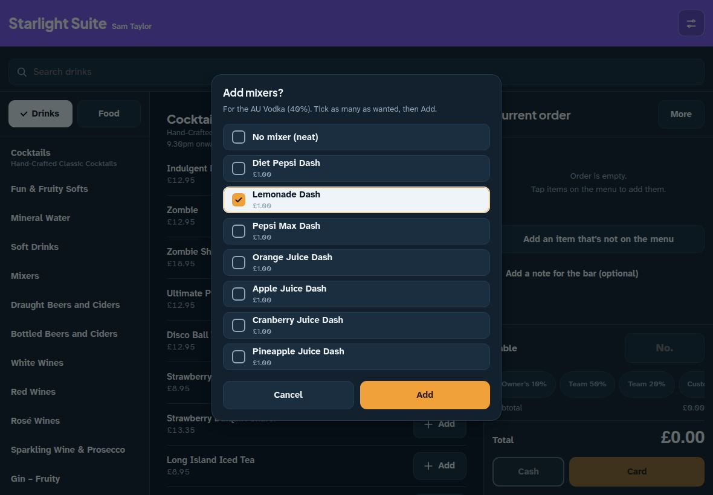
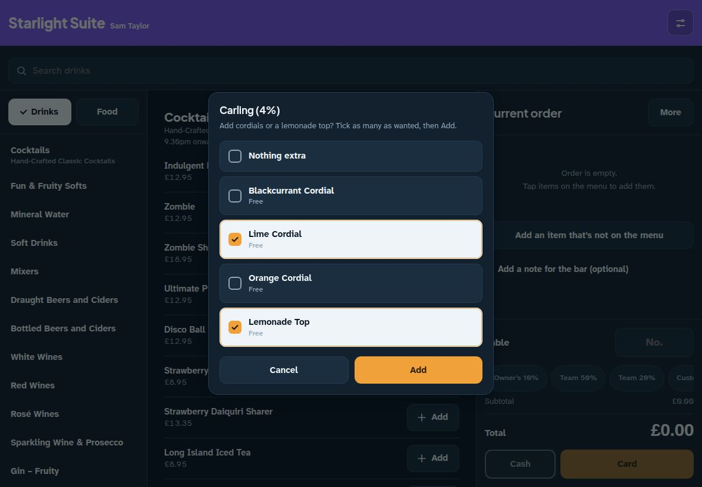
| Drink | Questions | Price |
|---|---|---|
| Spirits | Single or Double, then any mixers | Spirit price plus each mixer. Doubles use the double price set for that spirit. |
| Draught | Size (Pint, Half Pint, Shandy, Half Pint Shandy, Two Pint Cup, Pitcher), then cordials and Lemonade Top | Size price. Cordials and Lemonade Top are free. |
| Wine | 125ml, 175ml, 250ml or Bottle | Size price |
| Soft drinks | Kids, Small or Regular where there's a choice | Size price |
The dash mixers are £1.00 each: Diet Pepsi, Lemonade, Pepsi Max, Orange Juice, Apple Juice, Cranberry Juice and Pineapple Juice, plus Lime, Blackcurrant and Orange Cordial. Gins also offer the tonics from the Mixers category. Master settings › Drink options can replace these lists.
Example
AU Vodka, Single, then Lime Cordial and Lemonade Dash: AU Vodka (40%) (Single & Lime Cordial & Lemonade Dash) at £4.50 + £1.00 + £1.00 = £6.50. Mixers are listed in the order they were tapped.
05Paying, tables and tabs
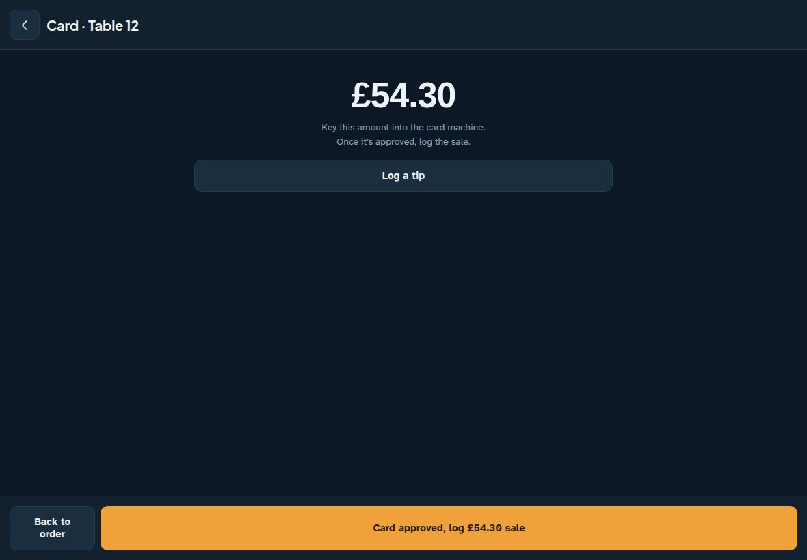
- Table number. Every order needs one before payment. If it's missing, the till asks for it. Table rules in Master settings can limit which numbers are allowed.
- Discounts. The discount buttons (Owner's 10%, Team 50%, Team 20%, Custom) sit above the total. Each deal sets which buttons can be used alongside it. A discount can ask for a manager's PIN.
- Happy Hour and deals. Cocktails: buy 2, the cheaper one half price, 3–6pm and 9:30pm to close. The till applies it automatically during those times and shows it on the customer display.
- Split the bill between several payments, tabs for groups paying at the end, and a note for the bar (no ice, birthday and so on).
Deals right now. In Back Office › Discounts, "Deals right now" can force every deal on or off. That now lasts until 6am, then each deal follows its own times again. The old setting never expired, which is why Happy Hour once kept running after 6pm.
06Open orders and delivery
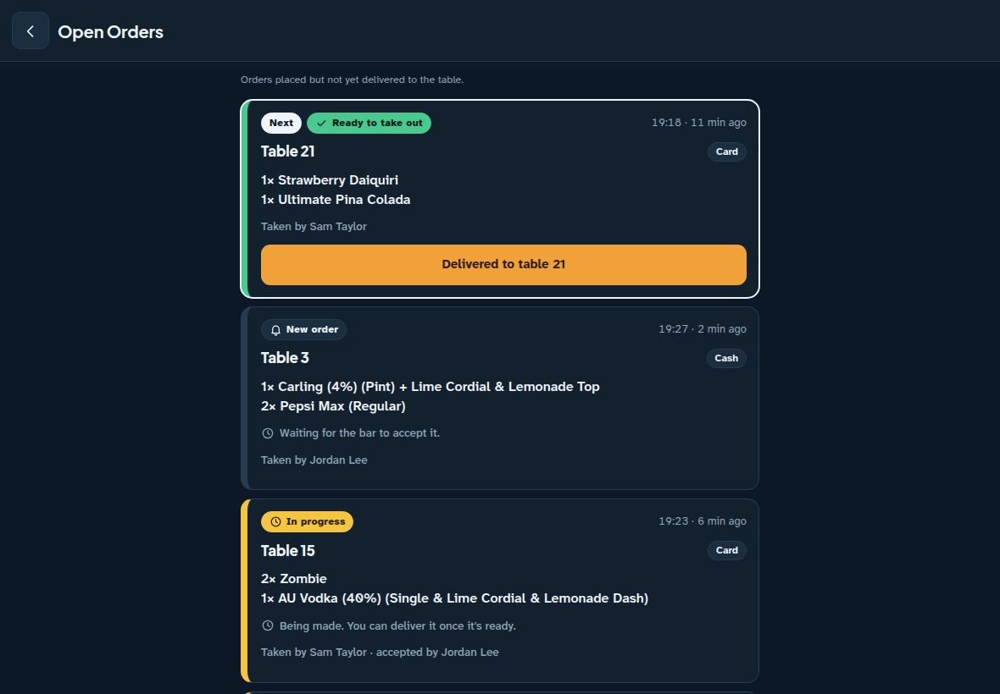
- Tills don't accept orders; the bar and kitchen do. Tills only take ready orders out.
- If two tills tap Delivered on the same order, only the first counts. The other sees "Table 12 was already delivered by someone else", so the delivered notice is only sent once.
- An order with a refund already done can be closed with Already refunded, close it.
07Order screen (bar)
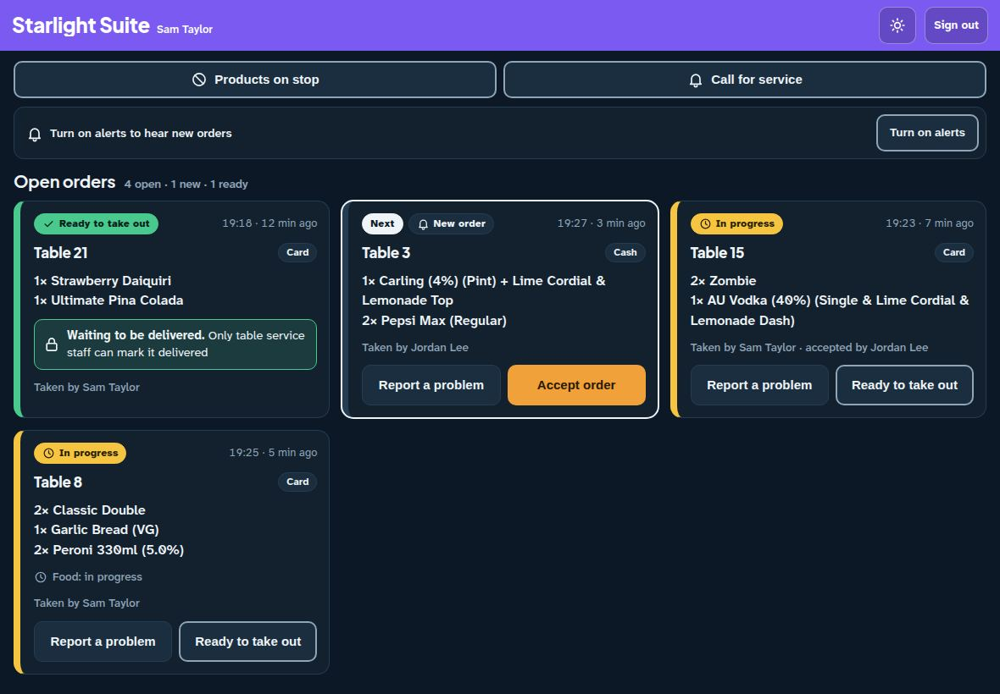
- Accept order when you start making it. The person who took it gets a quiet "accepted" notice.
- Ready to take out when it's on the bar. If the order also has food, it's ready once the kitchen has finished too.
- Report a problem if something's out of stock, spilt or wrong. Choose a reason and whether to offer a substitute or a refund. The till staff are told straight away.
- Products on stop takes items off sale at this venue, optionally until a set time. The tills grey them out within seconds.
- Call for service calls a person or a group to the bar (see Notifications).
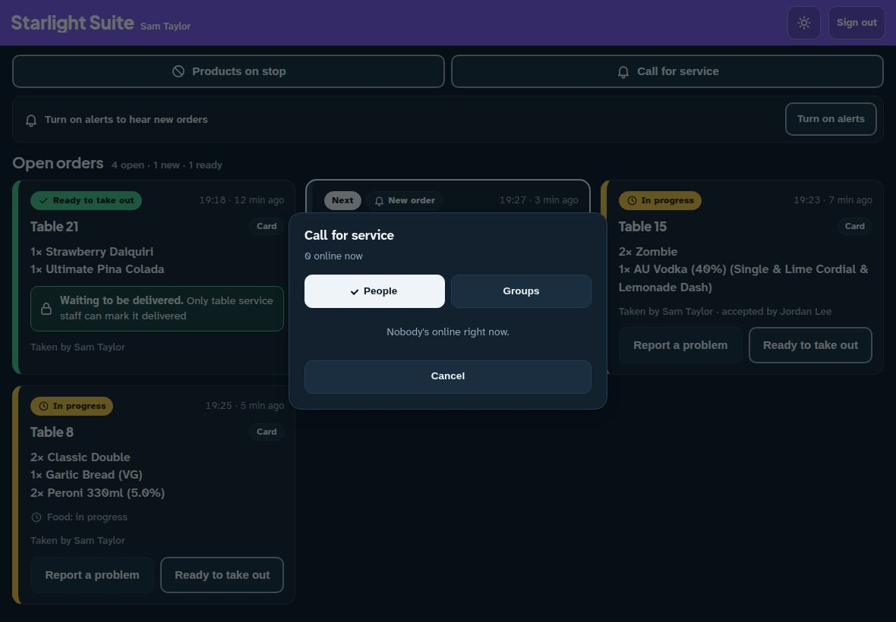
08Kitchen View
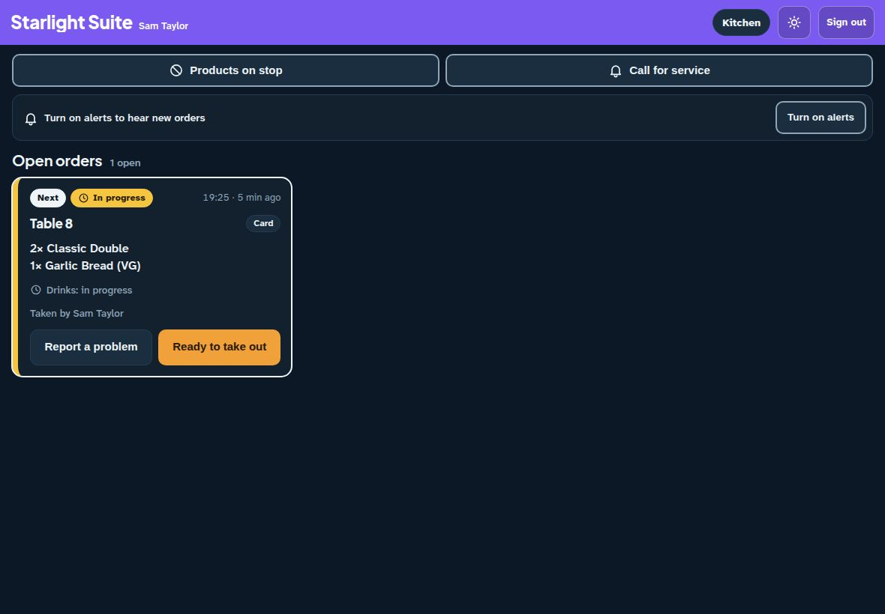
- Open
/kitchenand sign in as the kitchen's account. If there's more than one kitchen, pick which one this screen is. The device remembers it. - Kitchens and the venues each one cooks for are set in Back Office › Kitchens (Global Admin).
- Stopping an item here stops it at every venue the kitchen cooks for.
- If Kitchen screen is switched off in Master settings, the whole screen is locked, sign-in included. It unlocks by itself within about 15 seconds of being switched back on.
09Customer display
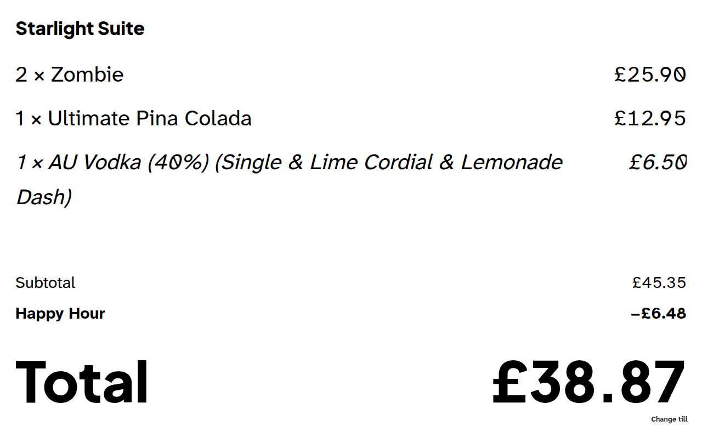
- Updates within about half a second of every tap, so the customer sees "AU Vodka", then "(Single)", then each mixer as it's added.
- Shows "Thank you!" with the amount paid for 8 seconds after payment.
- Locked while Customer display is switched off in Master settings, the same way as the Kitchen View.
10Notifications, alerts and sounds
Call for service
Pops up with a beep on the person's screen, and sends a phone push. The message says who and where, for example "Kitchen Team needs you in Functions Kitchen".
Notify someone
A private message to one person, on their screen and phone.
Announce to everyone
A banner under the venue name, or an urgent pop-up everyone has to tap Got it on.
Order notices
New orders, ready to take out, problems reported, refunds needed, delivered.
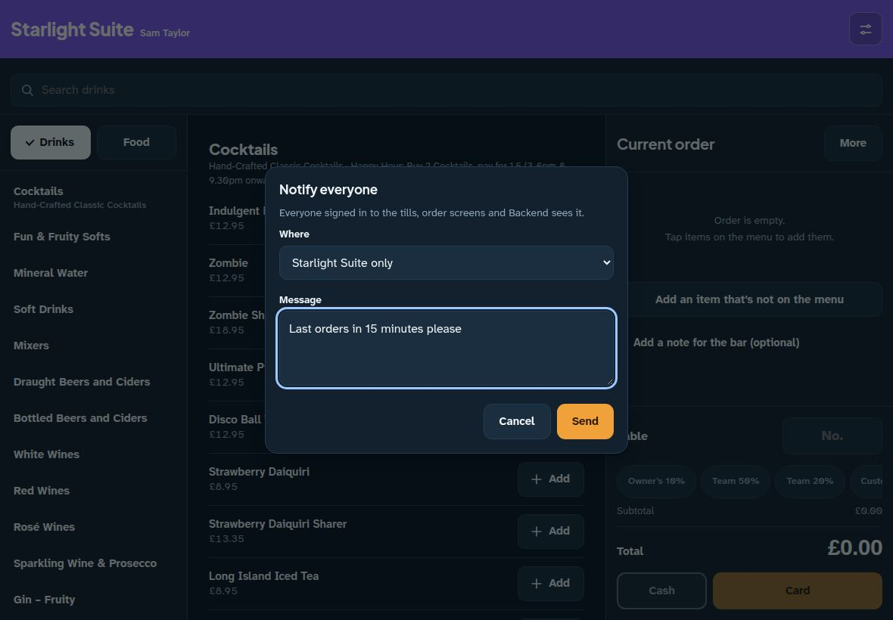
Service call wording
Set in Master settings › Notifications and messages › Service call wording. {name} is whoever called, {place} or {venue} is the venue's place name, and {kitchen} is the kitchen's name.
| Venue | Place name | A call from the bar team says |
|---|---|---|
| Starlight Suite | Starlight Bar | Starlight Bar Team needs you at Starlight Bar |
| Lounge Bar | Lounge Bar | Lounge Bar Team needs you at Lounge Bar |
| Carousel | Carousel Bar | Carousel Bar Team needs you at Carousel Bar |
| Kitchen | Functions Kitchen | Kitchen Team needs you in Functions Kitchen |
The wording is written by the screen that sends the call, so a screen still on an older version sends the old wording until it's reloaded.
Sounds
- Five built-in tones (Classic, Soft bell, Two-tone ding, Urgent buzz, Chirp), plus any uploaded in Back Office › Settings › Notification Sounds. Eight more are ready to upload: Doorbell, Marimba, Rising alert, Pager, Kitchen bell, Siren, Arpeggio and Sonar.
- Each person picks their own sound in the till's Settings. Managers can set it for their staff in Back Office › Notifications.
- A screen that can't beep yet shows the amber "Sound is off on this screen" button. Any tap turns sound on.
11Problems and refunds
- The bar or kitchen taps Report a problem on the order, picks the item and a reason, and chooses Substitute or Refund.
- The till that took the order is told. For a substitute, the customer accepts or declines and the till records it.
- For a refund, someone with the Refunds permission opens the order on the till, taps Refund and confirms. A manager's PIN can be required over a set amount.
- The refund comes off takings, appears in the Z Read and activity log, and posts to Discord.
Two people can't refund the same item: the first claims it, and the other is told it's already being refunded.
12Back Office
The Back Office is for managers. What each person sees depends on their permissions. A Global Admin sees every venue.
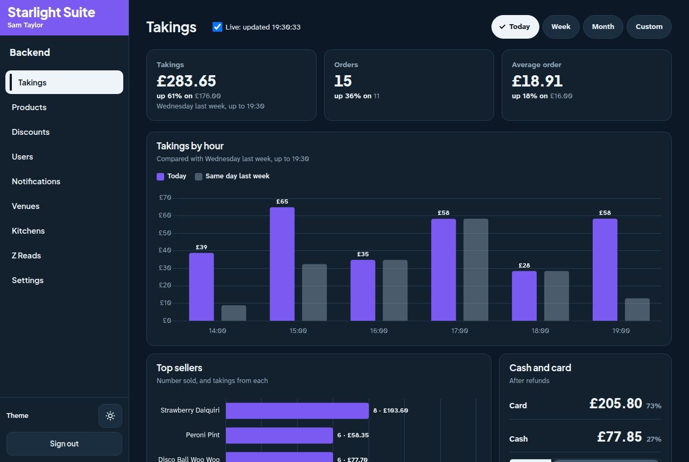
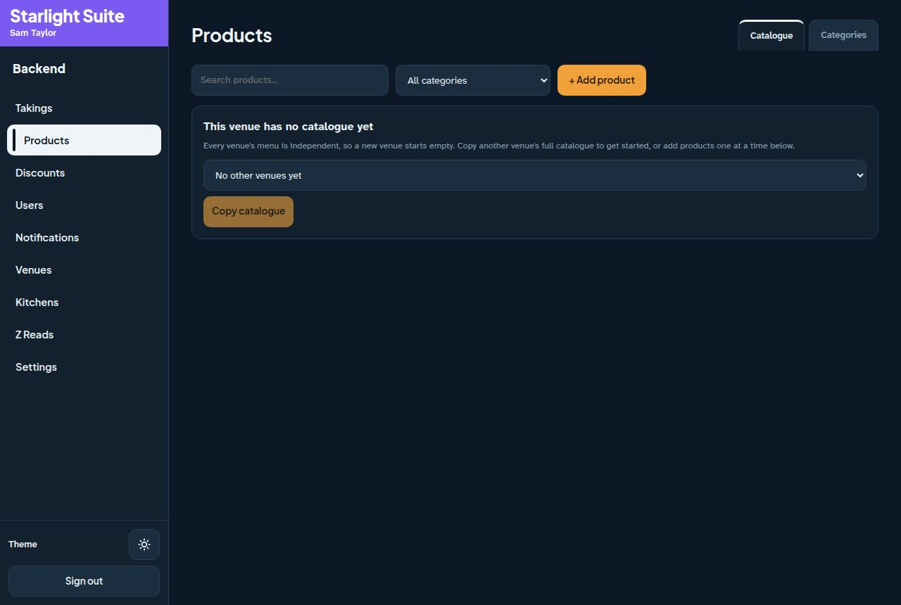
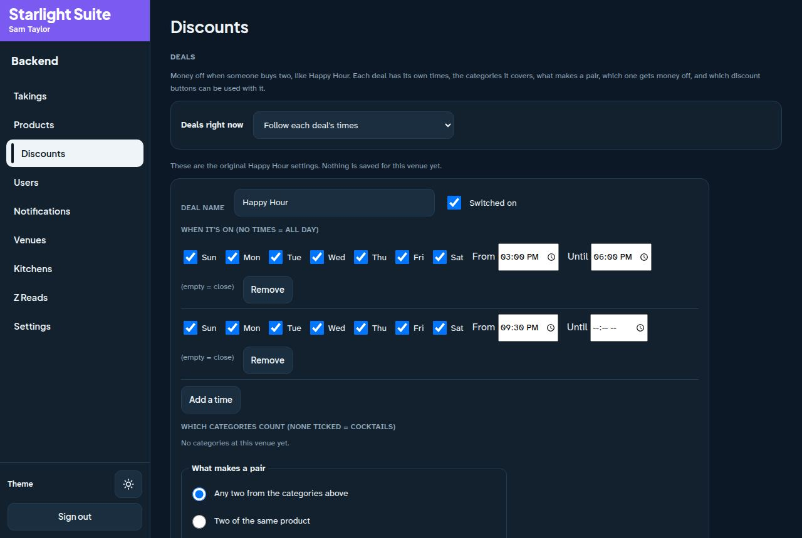
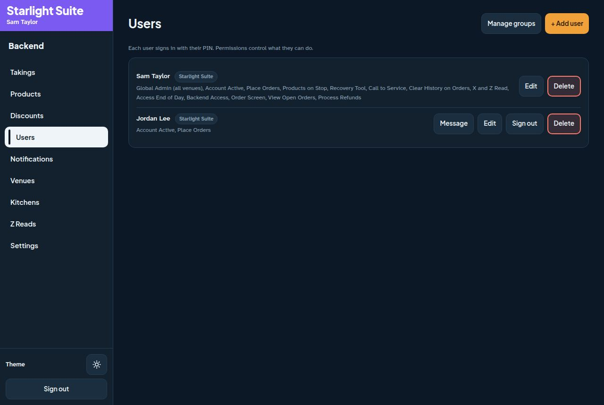
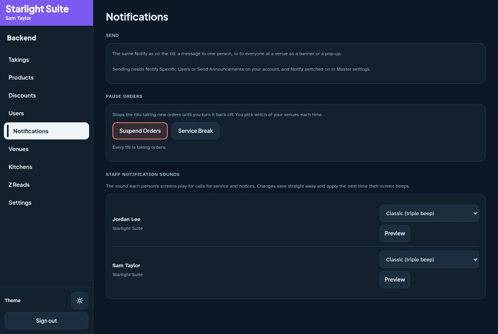
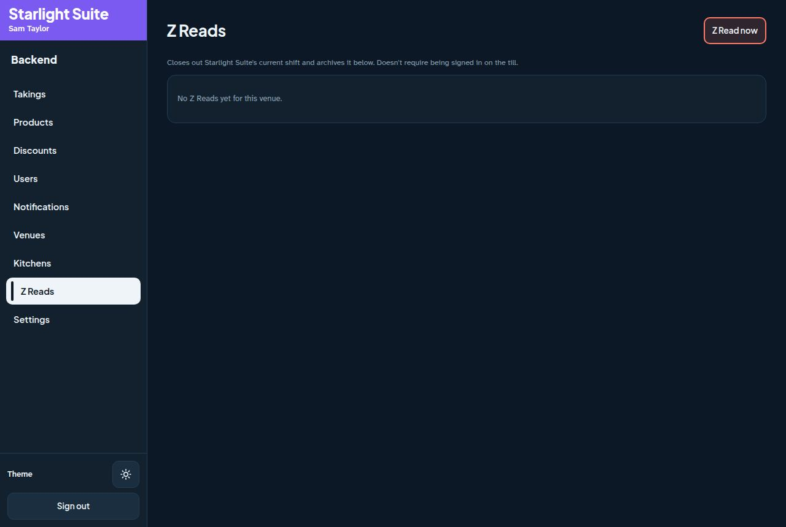
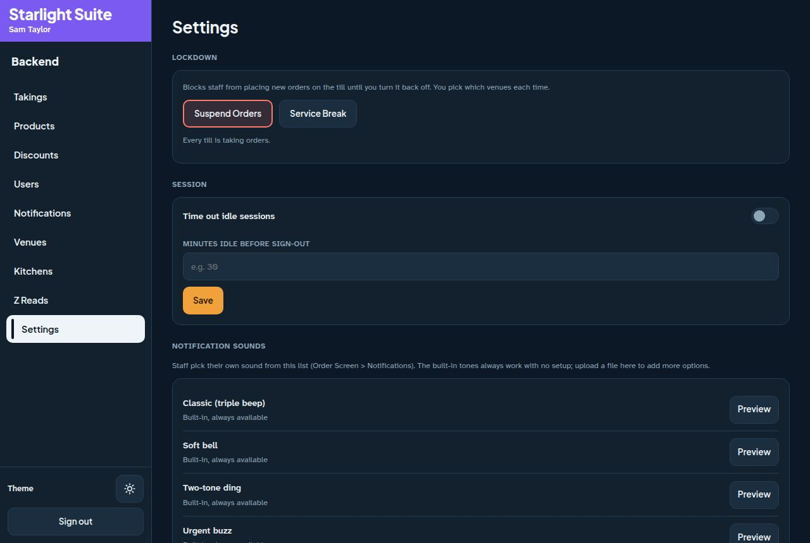
Pages
| Page | What it's for | Who sees it |
|---|---|---|
| Takings | Live takings, by hour, top sellers, cash and card | Back Office access |
| Products | Menu items, prices, sizes, categories, stops | Back Office access |
| Discounts | Deals, discount buttons, Deals right now | Back Office access |
| Users | Staff, permissions, PINs, sign-out, private messages | Back Office access |
| Notifications | Notify, Announce, Suspend Orders, Service Break, staff sounds | Back Office access |
| Venues | Venue details, food on or off, colours | Global Admin |
| Kitchens | Kitchens and the venues they cook for | Global Admin, Kitchen screen on |
| Z Reads | Close a shift, past Z Reads | X/Z Read permission |
| Settings | Lockdown for every venue, idle sign-out, sound uploads | Global Admin |
| Hours | Clocked shifts, as a spreadsheet | Clock in and out on |
| Activity log | Everything people did, up to 50,000 entries, 100 a page | View Activity Logs permission |
| Open orders | Change any order's status | $YSTEM |
| Master settings | Every optional feature, themes, layouts | $YSTEM |
Pausing orders
Suspend Orders stops the tills taking new orders. Service Break pauses them with a "back shortly" screen. Both are on the Notifications page for any Back Office user, but only for their own venues. Global Admins also have them in Settings, for every venue.
One-off setup. Regular Back Office users can only pause orders once notifications_backend.sql has been run in Supabase. Until then, they're told to ask $YSTEM to run it.
Device health
Lists every screen with its version, who's signed in, when it was last seen, and any sales waiting to save. From here you can Refresh or Sign out one device, or remove old ones. Any screen not on the current version needs reloading.
13Master settings
Only $YSTEM, with its password, can open Master settings. Every optional feature starts switched off, so it can be set up before staff see it.
| Group | Features |
|---|---|
| Notifications and messages | Announcements, private messages, alert settings, push on each device, service call wording, Discord |
| Menu and stock | Scheduled stops, stock counts, scheduled prices, diet tags, quick notes, favourites, drink options, copy a venue |
| Orders and payment | Discounts, cash and tip buttons, table rules, split bill, tabs, manager approval, reasons, resend order, late orders, opening hours |
| Screens and devices | Customer display, kitchen screen, receipts, bigger text, remote refresh and sign-out, device health |
| Reports and money | Takings target, per-person takings, Z Read reminder, daily summary email, report header, export data |
| Staff | Clock in and out, training mode, session timeouts, role templates |
| Look and feel | Personal layouts and themes, venue colours, layout groups, sign-in branding, browser tab names, formats |
| System | Maintenance Mode, activity log, backup and restore |
Themes and layouts set the look for every screen: seven themes in light and dark, and the default till layout.
14Reliability and security
Sales are never lost
If a till loses its connection, the sale waits on that device and saves as soon as it can. A red "waiting to save" bar shows until it has. Keep that screen open.
No hung screens
Any request that takes longer than 15 seconds is dropped and tried again, so a bad connection can't freeze a till.
Discord queue
Posts queue on the server and go out in order, paced to Discord's limits, retried if Discord is busy. Nothing is lost on a busy night.
Activity log survives reloads
Log entries waiting to send are kept on the device, so reloading straight after a sale doesn't lose its entry.
PINs are private
No one can read anyone's PIN from the database. Manager approval is checked by the database, and 10 wrong tries in 5 minutes locks that account out for 5 minutes.
Remote control
Refresh or sign out any device from Device health. A deactivated account is signed out of every screen within about 15 seconds.
Stress test results
| Check | Result |
|---|---|
| Sales recorded vs. saved | 148 = 148 £3,298.83 both sides |
| Refunds | 3 = 3 |
| Orders delivered once | 146 no double deliveries |
| Activity log | 144 of 148 the 4 lost on reloads are now fixed |
| Service calls | 22 all reached the right person |
The test ran 9 tills, 2 bar screens and the kitchen for 10 minutes, with deliberate reloads, sign-outs, lost connections and mistakes.
15Running a night
Before opening
- Reload every screen: tills, order screens, kitchen, customer display, Back Office. Check Device health shows them all on the current version.
- Sign in on each device as the person or team using it, and tap Turn on alerts.
- Check no screen shows the amber "Sound is off" button.
- Check food is on at the venues serving food, and the right items are on stop.
- Send one service call from the kitchen and one from a bar. Check the pop-up, the beep and the wording.
- Put one test order through: accept, ready, Delivered on a till. Check one Discord post arrives.
- Z Read every till so the night starts at zero.
During service
- Watch Takings in the Back Office with Live ticked.
- Use Notifications to call people, announce last orders, or pause orders at a venue.
- A red "waiting to save" bar on a till means it has lost connection. Leave it open and it will catch up on its own.
Closing
- Make sure every order is delivered or closed (Back Office › Open orders as $YSTEM, or the till's Open orders).
- Z Read each till, or from Back Office › Z Reads. The Z Read warns you if a till still has sales waiting to save.
- Declare gratuities before the Z Read.
16Troubleshooting
| What you see | Why | What to do |
|---|---|---|
| No beep, but the push notification arrives | The screen hasn't been tapped since it loaded, or the iPhone is locked | Tap the screen, or the amber "Sound is off" button. Keep the app open on the bar. |
| No push notification | Alerts weren't turned on for that person on that device | Sign in as them and tap Turn on alerts. On iPhone, open NIPOS from the Home Screen. |
| Service call says the wrong place | The sending screen is on an older version | Reload it, or Refresh it from Device health. |
| Red "waiting to save" bar | The till lost its connection | Leave the screen open. It saves on its own once it's back online. |
| "Something in this order is no longer on the menu" | An item was removed or stopped while it was in the order | Ring it up again or pick something else. |
| Kitchen or customer display says "switched off" | Its feature is off in Master settings | Switch it on. The screen unlocks by itself within about 15 seconds. |
| Happy Hour on at the wrong time | Deals right now is forced on | Set it to "Follow each deal's times". Forced on now ends at 6am. |
| "Someone signed in as a different person in another tab" | Two people share one browser | Use a separate browser or device for each screen, then reload. |
| A screen won't do anything | It's stuck on an old version or lost its sign-in | Refresh it from Device health, or reload it on the device. |
17Technical reference
Hosting
GitHub Pages, from the NIPOS/ folder of KeystoneGD/KeystoneGD.github.io. Merging to main goes live in about a minute.
Database
Supabase project djegigghjeisoyecxeyo: Postgres with row-level security, sign-in, storage for sounds, realtime and scheduled jobs.
Server functions
manage-staff (create staff, change PINs), send-push (phone push), discord-relay (Discord queue), daily-summary (takings email).
NIPOS Local
NIPOS-LOCAL/ is a self-hosted copy that runs on a local Supabase. Refresh it with python3 scripts/update-from-nipos.py.
Files
| File | What it is |
|---|---|
index.html | The till |
orders.html | Order screen and Kitchen View (kitchen.html redirects to it) |
display.html | Customer display |
backend.html | Back Office |
db.js | Shared code: database, save queue, notifications, sounds, settings, security |
nipos.css, layouts.css | Shared styles and the six till layouts |
products.json | The built-in menu shown until a venue's own menu loads |
sw.js | Service worker that shows phone push notifications |
supabase/*.sql | Database setup scripts, run once in the SQL Editor |
Main tables
sales, open_orders, refunds, z_reports, catalogue_items, categories, stops, staff_users, venues, kitchens, notifications, push_subscriptions, activity_log, devices, device_commands, discord_queue, app_settings, app_state and system_theme (Master settings).
SQL scripts
| Script | Status |
|---|---|
security_and_devices.sql: PIN check, device controls, Discord queue | Run |
master_themes.sql: Master settings, themes, kitchens | Run |
notifications_backend.sql: lets Back Office users pause their own venues | To run |
remove_food_items.sql: removes the 10 discontinued food items | To run |
Menu source
Prices are checked against the Buckets Food 2 Go app through its product API (/api/Catalog/Products/{id}). The 22 October check covered 217 products. It corrected 7 spirit prices at all three venues and added 5 Heinz sauces at £0.35 to Sides.
18Change history
| Change | What it did |
|---|---|
| #32–#38 | Stress test fixes: shared basket, £0 sales after a menu reload, lost saves (the save queue), report-a-problem, activity log jams, hung requests, ready orders, Delivered |
| #39–#44 | $YSTEM Open orders, till delivery rules, 50k activity log, live Takings, browser tab names, PIN security, clock-change times, Discord queue, device controls |
| #45–#47 | Display and kitchen lock when switched off, Delivered counts once, no replayed notifications, faster service list |
| #48–#51 | Service call wording, log entries survive reloads, tiles from before the menu loads, push on iPhone |
| #52–#54 | Beeps after reloads, multi-select mixers and pint extras, cordial mixers, customer display building each line, Deals right now ends at 6am |
| #55–#58 | Back Office Notifications page, iPhone silent switch, Food as its own menu in every layout, built-in menu prices |